- Welcome to Touhou Wiki!
- Please register to edit. For assistance, check in with our Discord server or IRC channel.
Touhou Wiki
The Touhou Project is a series of 2D vertically-scrolling danmaku shooting games made by Team Shanghai Alice, with six fighting game spinoffs co-produced with Twilight Frontier.
Touhou Wiki covers the official Touhou Project games and materials and any fan-made games and media, along with other related games developed by the former members of Amusement Makers or in conjunction with Team Shanghai Alice. Everyone is welcome to read and contribute to it. Keep the policies, copyrights, and editing guidelines in mind while editing. For starters, check the links next to Articles Needing Attention at the bottom-right of this page.
Please notify our staff with issues or suggestions. For real-time communication, visit our IRC channel at irc.esper.net, #touhouwiki and our Discord server.
PC-98 Games
TH01 Highly Responsive to Prayers
TH02 Story of Eastern Wonderland
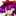 TH03 Phantasmagoria of Dim.Dream
TH04 Lotus Land Story
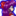 TH05 Mystic Square
Windows Games
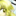 TH06 Embodiment of Scarlet Devil
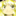 TH07 Perfect Cherry Blossom
TH07.5 Immaterial and Missing Power
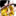 TH08 Imperishable Night
TH09 Phantasmagoria of Flower View
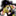 TH09.5 Shoot the Bullet
TH10 Mountain of Faith
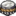 TH10.5 Scarlet Weather Rhapsody
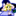 TH11 Subterranean Animism
TH12 Undefined Fantastic Object
TH12.3 Touhou Hisoutensoku
TH12.5 Double Spoiler
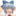 TH12.8 Fairy Wars
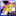 TH13 Ten Desires
TH13.5 Hopeless Masquerade
TH14 Double Dealing Character
TH14.3 Impossible Spell Card
TH14.5 Urban Legend in Limbo
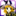 TH15 Legacy of Lunatic Kingdom
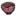 TH15.5 Antinomy of Common Flowers
TH16 Hidden Star in Four Seasons
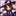 TH16.5 Violet Detector
TH17 Wily Beast and Weakest Creature
Other Games
Gold Rush
Seihou Project
Samidare
Uwabami Breakers
Related Games
Fangames
ZUN's Music Collection
Dolls in Pseudo Paradise
Ghostly Field Club
Changeability of Strange Dream
Retrospective 53 minutes
Magical Astronomy
Unknown Flower, Mesmerizing Journey
Trojan Green Asteroid
Neo-traditionalism of Japan
Dr. Latency's Freak Report
Dateless Bar "Old Adam"
Akyu's Untouched Score
Volume 1 (TH04)
Volume 2 (TH05)
Volume 3 (TH02)
Volume 4 (TH03)
Volume 5 (TH01)
Soundtracks
Immaterial and Missing Power OST
Scarlet Weather Rhapsody OST
Touhou Hisoutensoku OST
Hopeless Masquerade OST
Urban Legend in Limbo OST
Urban Legend in Limbo PS4 OST
Antinomy of Common Flowers OST
Extras
Bohemian Archive in Japanese Red CD
Seasonal Dream Vision CD
Perfect Memento in Strict Sense CD
Grimoire of Marisa CD
Silent Sinner in Blue CD
Eastern and Little Nature Deity CD
Strange and Bright Nature Deity CD 1
Strange and Bright Nature Deity CD 2
Strange and Bright Nature Deity CD 3
Oriental Sacred Place CD 1
Oriental Sacred Place CD 2
Oriental Sacred Place CD 3
Forbidden Scrollery CD
Fan Music
Fan Music
Touhou Bougetsushou
Silent Sinner in Blue
Cage in Lunatic Runagate
Inaba of the Moon and Inaba of the Earth
Touhou Bunka (Bunbunmaru News)
Bohemian Archive in Japanese Red
Alternative Facts in Eastern Utopia
Touhou Gumon (Gensokyo Chronicle)
Perfect Memento in Strict Sense
Symposium of Post-mysticism
Touhou Ibarakasen
Wild and Horned Hermit
Touhou Kourindou
Curiosities of Lotus Asia
Touhou Sangetsusei
Eastern and Little Nature Deity
Strange and Bright Nature Deity
Oriental Sacred Place
Visionary Fairies in Shrine
Touhou Suzunaan
Forbidden Scrollery
Danmaku Works
The Grimoire of Marisa
The Grimoire of Usami
Magazines
Strange Creators of Outer World
Various
Seasonal Dream Vision
Fan Comics
List of circles